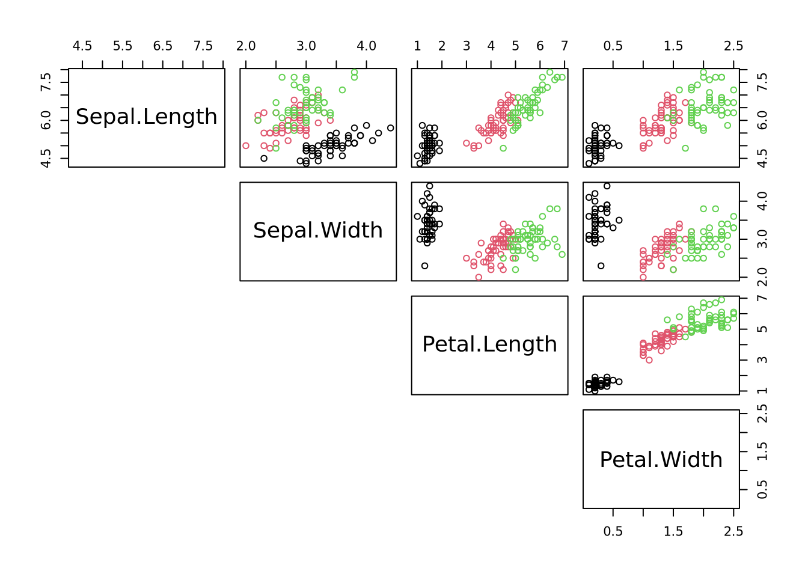
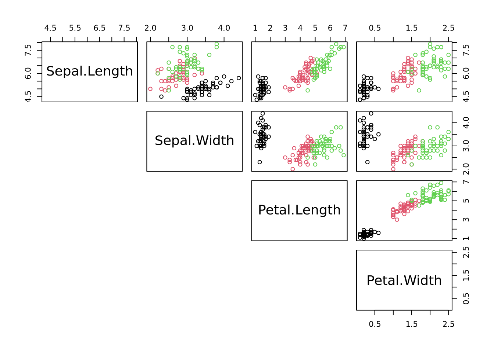
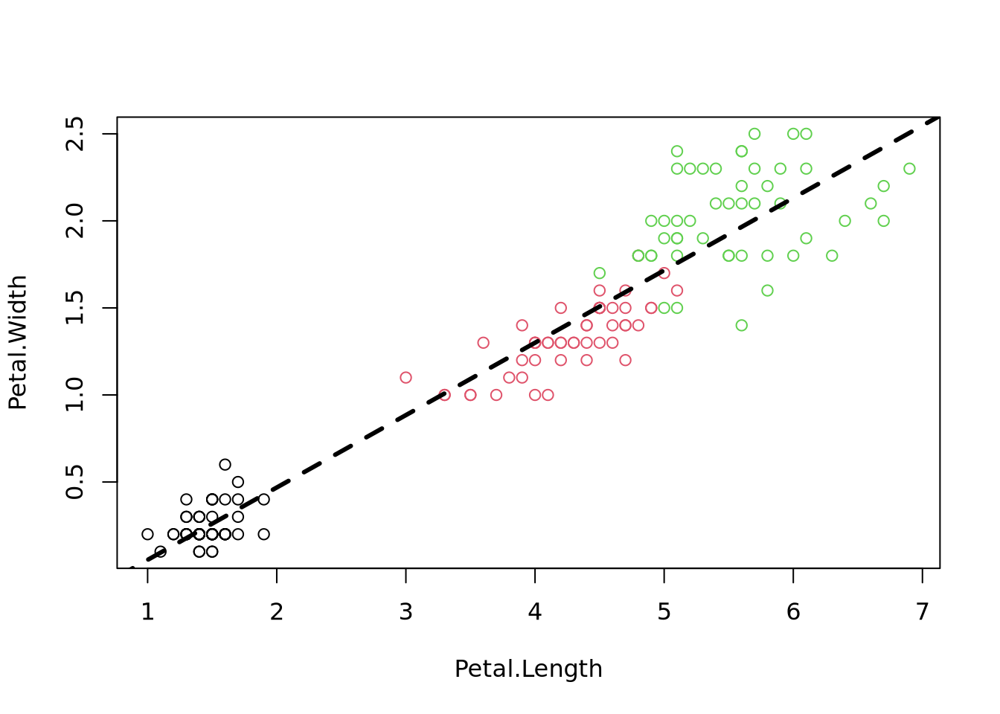
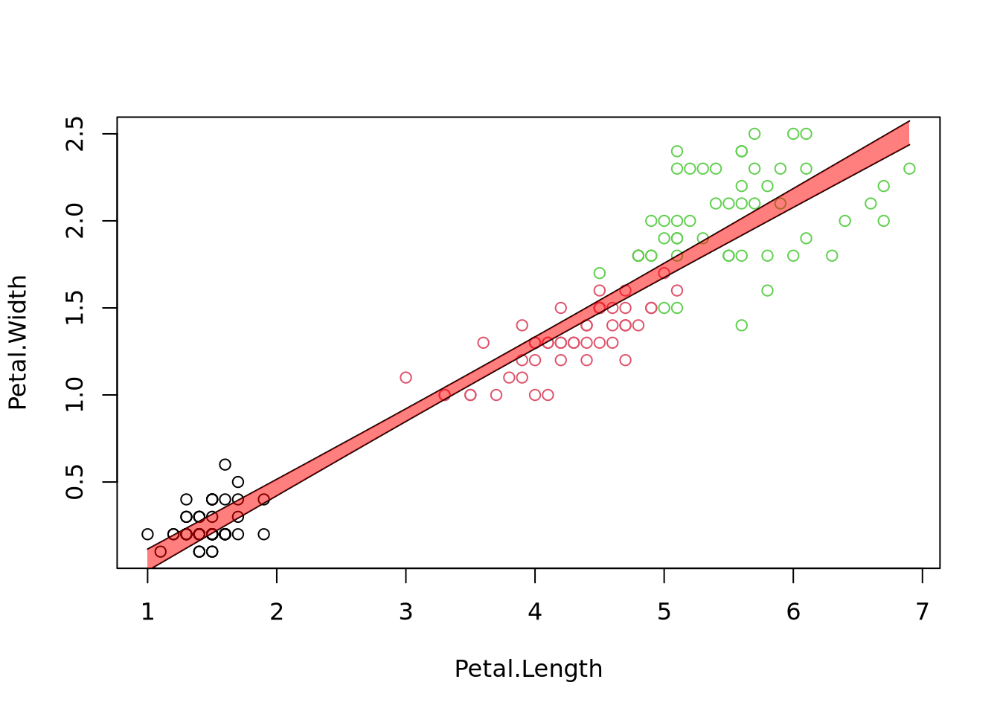
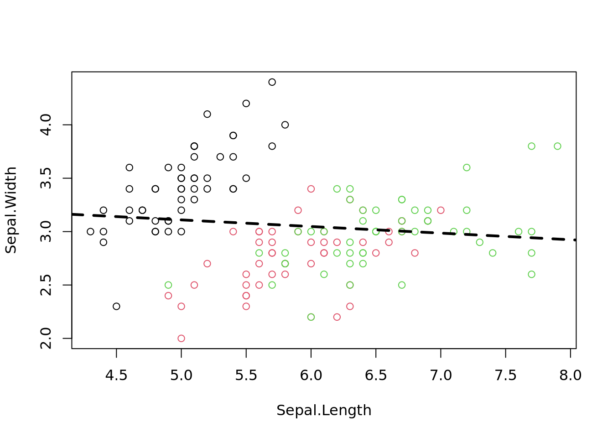
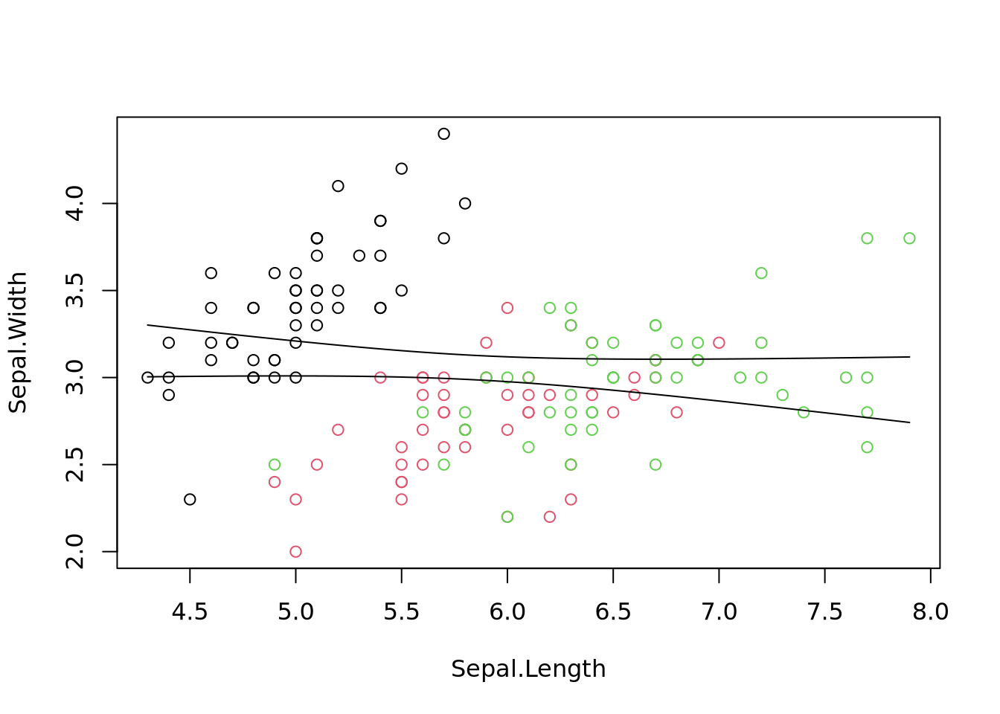
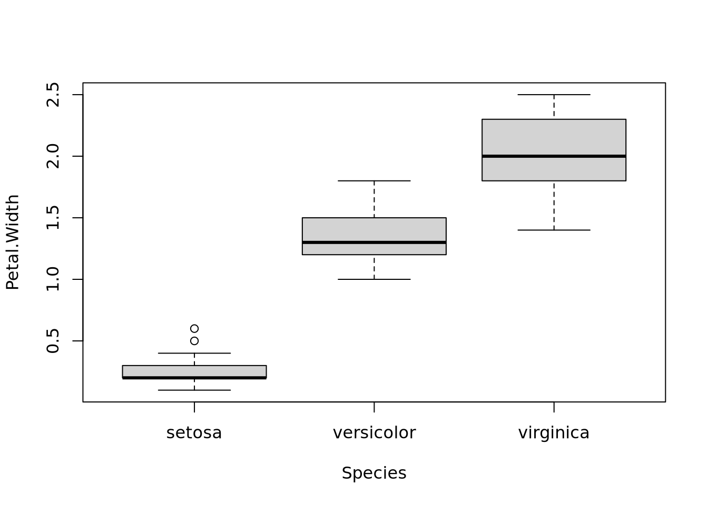
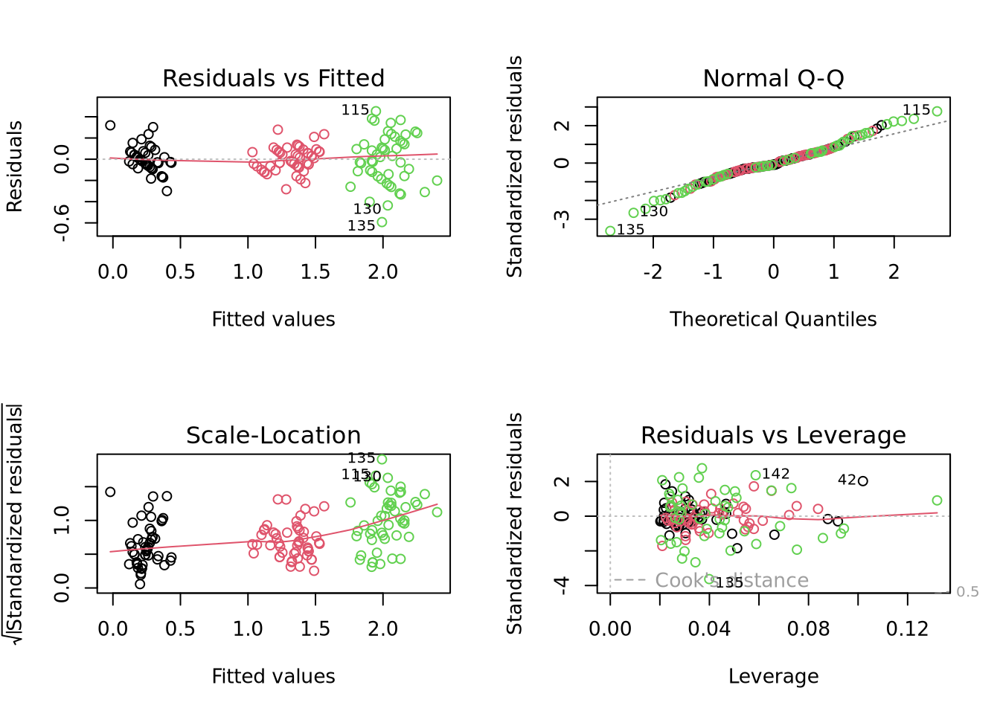

Code
# assign species-colors to each observation
cols = iris$Species # understand how color is defined
plot(iris[,-5], col=cols, lower.panel=NULL) # "cols" was defined in task above
Thomas Manke
Task: Generate all-against-all correlation plot. Understand:
cols[,-5]
Goal:
Model some dependent variable y as function of other explanatory variables x (features)
\[ y = f(\theta, x) = \theta_1 x + \theta_0 \]
For \(N\) data points, choose parameters \(\theta\) by ordinary least squares:
\[ RSS=\sum_{i=1}^{N} (y_i - f(\theta, x_i))^2 \to min \]
Easy in R:

Query: What class is the object fit?
Task: Extract the coefficients of the fitted line.
(Intercept) Petal.Length
-0.3630755 0.4157554 (Intercept) Petal.Length
-0.3630755 0.4157554
Call:
lm(formula = Petal.Width ~ Petal.Length, data = iris)
Residuals:
Min 1Q Median 3Q Max
-0.56515 -0.12358 -0.01898 0.13288 0.64272
Coefficients:
Estimate Std. Error t value Pr(>|t|)
(Intercept) -0.363076 0.039762 -9.131 4.7e-16 ***
Petal.Length 0.415755 0.009582 43.387 < 2e-16 ***
---
Signif. codes: 0 '***' 0.001 '**' 0.01 '*' 0.05 '.' 0.1 ' ' 1
Residual standard error: 0.2065 on 148 degrees of freedom
Multiple R-squared: 0.9271, Adjusted R-squared: 0.9266
F-statistic: 1882 on 1 and 148 DF, p-value: < 2.2e-16 (Intercept) Petal.Length
-0.3630755 0.4157554 2.5 % 97.5 %
(Intercept) -0.4416501 -0.2845010
Petal.Length 0.3968193 0.4346915This is a good fit as suggested by a
\[
R^2 = 1 - \frac{RSS}{TSS} = 1 - \frac{\sum_i(y_i - y(\theta,x_i))^2}{\sum_i(y_i-\bar{y})^2}
\] There are manny more methods to access information for the lm class
[1] add1 alias anova case.names coerce
[6] confint cooks.distance deviance dfbeta dfbetas
[11] drop1 dummy.coef effects extractAIC family
[16] formula hatvalues influence initialize kappa
[21] labels logLik model.frame model.matrix nobs
[26] plot predict print proj qr
[31] residuals rstandard rstudent show simulate
[36] slotsFromS3 summary variable.names vcov
see '?methods' for accessing help and source codeUncertainties in parameters become uncertainties in fits:
x=iris$Petal.Length # explanatory variable from fit (here:Petal.Length)
xn=seq(min(x), max(x), length.out = 100) # define range of new explanatory variables
ndf=data.frame(Petal.Length=xn) # put them into new data frame
p=predict(fit, ndf, interval = 'confidence' , level = 0.95)
plot(Petal.Width ~ Petal.Length, data=iris, col=Species)
lines(xn, p[,"lwr"] )
lines(xn, p[,"upr"] )
#some fancy filling
polygon(c(rev(xn), xn), c(rev(p[ ,"upr"]), p[ ,"lwr"]), col = rgb(1,0,0,0.5), border = NA)
Just replace “Petal” with “Sepal”

2.5 % 97.5 %
(Intercept) 2.9178767 3.92001694
Sepal.Length -0.1467928 0.02302323
Call:
lm(formula = Sepal.Width ~ Sepal.Length, data = iris)
Residuals:
Min 1Q Median 3Q Max
-1.1095 -0.2454 -0.0167 0.2763 1.3338
Coefficients:
Estimate Std. Error t value Pr(>|t|)
(Intercept) 3.41895 0.25356 13.48 <2e-16 ***
Sepal.Length -0.06188 0.04297 -1.44 0.152
---
Signif. codes: 0 '***' 0.001 '**' 0.01 '*' 0.05 '.' 0.1 ' ' 1
Residual standard error: 0.4343 on 148 degrees of freedom
Multiple R-squared: 0.01382, Adjusted R-squared: 0.007159
F-statistic: 2.074 on 1 and 148 DF, p-value: 0.1519Interpretation: slope is not significantly distinct from 0. Model does not account for much of the observed variation.
Task: Use the above template to make predictions for the new poor model.

In the iris example the “Species” variable is a factorial (categorical) variable with 3 levels. Other typical examples: different experimental conditions or treatments.

Call:
lm(formula = Petal.Width ~ Species, data = iris)
Residuals:
Min 1Q Median 3Q Max
-0.626 -0.126 -0.026 0.154 0.474
Coefficients:
Estimate Std. Error t value Pr(>|t|)
(Intercept) 0.24600 0.02894 8.50 1.96e-14 ***
Speciesversicolor 1.08000 0.04093 26.39 < 2e-16 ***
Speciesvirginica 1.78000 0.04093 43.49 < 2e-16 ***
---
Signif. codes: 0 '***' 0.001 '**' 0.01 '*' 0.05 '.' 0.1 ' ' 1
Residual standard error: 0.2047 on 147 degrees of freedom
Multiple R-squared: 0.9289, Adjusted R-squared: 0.9279
F-statistic: 960 on 2 and 147 DF, p-value: < 2.2e-16Interpretation:
summary(fit) contains information on the individual coefficients. They are difficult to interpret
Analysis of Variance Table
Response: Petal.Width
Df Sum Sq Mean Sq F value Pr(>F)
Species 2 80.413 40.207 960.01 < 2.2e-16 ***
Residuals 147 6.157 0.042
---
Signif. codes: 0 '***' 0.001 '**' 0.01 '*' 0.05 '.' 0.1 ' ' 1Interpretation: variable “Species” accounts for much variation in “Petal.Width”
Determine residual standard error sigma for different fits with various complexity
[1] "lm, Petal.Width ~ Petal.Length, iris 0.206484348913609"[1] "lm, Petal.Width ~ Petal.Length + Sepal.Length, iris 0.204445704742963"[1] "lm, Petal.Width ~ Species, iris 0.204650024805914"[1] "lm, Petal.Width ~ ., iris 0.166615943019283"… more complex models tend to have smaller residual standard error (overfitting?)
“fit” is a large object of the lm-class which contains also lots of diagnostic informmation. Notice how the behaviour of “plot” changes.

more examples here: http://www.statmethods.net/stats/regression.html
Linear models \(y_i=\theta_0 + \theta_1 x_i + \epsilon_i\) make certain assumptions (\(\epsilon_i \propto N(0,\sigma^2)\))
---
title: "05: Data Modeling"
author: "Thomas Manke"
categories:
- linear model
- predictions
- diagnostics
---
```{r, child="_setup.qmd"}
```
# Recap: All-Against-All Correlations
**Task**: Generate all-against-all correlation plot. Understand:
- `cols`
- selection/unselection of elements `[,-5]`
- plot() function and arguments
```{r}
# assign species-colors to each observation
cols = iris$Species # understand how color is defined
plot(iris[,-5], col=cols, lower.panel=NULL) # "cols" was defined in task above
```
***
# From Correlations to Models
**Goal:**
Model some dependent variable y as function of other explanatory variables x (features)
$$
y = f(\theta, x) = \theta_1 x + \theta_0
$$
For $N$ data points, choose parameters $\theta$ by ordinary least squares:
$$
RSS=\sum_{i=1}^{N} (y_i - f(\theta, x_i))^2 \to min
$$
Easy in R:
```{r ols}
plot(Petal.Width ~ Petal.Length, data=iris, col=Species) # use model ("formula") notation
fit=lm(Petal.Width ~ Petal.Length, data=iris) # fit a linear model
abline(fit, lwd=3, lty=2) # add regression line
```
**Query**: What class is the object `fit`?
**Task**: Extract the coefficients of the fitted line.
```{r, echo=FALSE}
fit$coefficients
coef(fit)
```
# Reporting the fit (model)
```{r lm_summary}
summary(fit) # summary() behaves differently for fit objects
coefficients(fit) # more functions for specific elements
confint(fit) # Try to change the confidence level: ?confint
```
This is a good fit as suggested by a
- small residual standard error
- a large coefficient of variation $R^2$
- a small p-value
- and by visualization
$$
R^2 = 1 - \frac{RSS}{TSS} = 1 - \frac{\sum_i(y_i - y(\theta,x_i))^2}{\sum_i(y_i-\bar{y})^2}
$$
There are manny more methods to access information for the `lm` class
```{r class_methods}
methods(class='lm')
```
# Predictions (with confidence intervals)
Uncertainties in parameters become uncertainties in fits:
```{r predictions}
x=iris$Petal.Length # explanatory variable from fit (here:Petal.Length)
xn=seq(min(x), max(x), length.out = 100) # define range of new explanatory variables
ndf=data.frame(Petal.Length=xn) # put them into new data frame
p=predict(fit, ndf, interval = 'confidence' , level = 0.95)
plot(Petal.Width ~ Petal.Length, data=iris, col=Species)
lines(xn, p[,"lwr"] )
lines(xn, p[,"upr"] )
#some fancy filling
polygon(c(rev(xn), xn), c(rev(p[ ,"upr"]), p[ ,"lwr"]), col = rgb(1,0,0,0.5), border = NA)
## using ggplot2 - full introduction later
#library(ggplot2)
#g = ggplot(iris, aes(Petal.Length, Petal.Width, colour=Species))
#g + geom_point() + geom_smooth(method="lm", se=TRUE, color="red") + geom_smooth(method="loess", colour="blue")
```
# Poor Model
Just replace "Petal" with "Sepal"
```{r}
plot(Sepal.Width ~ Sepal.Length, data=iris, col=cols)
fit1=lm(Sepal.Width ~ Sepal.Length, data=iris)
abline(fit1, lwd=3, lty=2)
confint(fit1) # estimated slope is indistinguishable from zero
summary(fit1)
```
*Interpretation*: slope is not significantly distinct from 0.
Model does not account for much of the observed variation.
**Task**: Use the above template to make predictions for the new poor model.
```{r echo=FALSE}
x=iris$Sepal.Length # explanatory variable from fit (here:Sepal.Length)
xn=seq(min(x), max(x), length.out = 100) # define range of new explanatory variables
ndf=data.frame(Sepal.Length=xn) # put them into data frame
p=predict(fit1, ndf, interval = 'confidence' , level = 0.95) # predict values
plot(Sepal.Width ~ Sepal.Length, data=iris, col=Species)
lines(xn, p[,"lwr"] )
lines(xn, p[,"upr"] )
```
# Factorial variables as predictors
In the iris example the "Species" variable is a factorial (categorical) variable with 3 levels.
Other typical examples: different experimental conditions or treatments.
```{r}
plot(Petal.Width ~ Species, data=iris)
fit=lm(Petal.Width ~ Species, data=iris)
summary(fit)
```
*Interpretation*:
- "setosa" (1st species) has mean Petal.Width=0.246(29) - reference baseline
- "versicolor" (2nd species) has mean Petal.Width = Petal.Width(setosa) + 1.08(4)
- "virginica" (3rd species) has mean Petal.Width = Petal.Width(setosa) + 1.78(4)
# Anova
`summary(fit)` contains information on the individual coefficients. They are difficult to interpret
```{r anova}
anova(fit)
```
**Interpretation**: variable "Species" accounts for much variation in "Petal.Width"
***
# More complicated models
Determine residual standard error `sigma` for different fits with various complexity
```{r}
fit=lm(Petal.Width ~ Petal.Length, data=iris)
paste(toString(fit$call), sigma(fit))
fit=lm(Petal.Width ~ Petal.Length + Sepal.Length, data=iris) # function of more than one variable
paste(toString(fit$call), sigma(fit))
fit=lm(Petal.Width ~ Species, data=iris) # function of categorical variables
paste(toString(fit$call), sigma(fit))
fit=lm(Petal.Width ~ . , data=iris) # function of all other variable (numerical and categorical)
paste(toString(fit$call), sigma(fit))
```
... more complex models tend to have smaller residual standard error (overfitting?)
***
# Model Checking: Diagnostic Plots
"fit" is a large object of the lm-class which contains also lots of diagnostic informmation.
Notice how the behaviour of "plot" changes.
```{r fit_diag}
fit=lm(Petal.Width ~ ., data=iris)
op=par(no.readonly=TRUE) # safe only resettable graphical parameters, avoids many warnings
par(mfrow=c(2,2)) # change graphical parameters: 2x2 images on device
plot(fit,col=iris$Species) # four plots rather than one
par(op) # reset graphical parameters
```
more examples here: http://www.statmethods.net/stats/regression.html
Linear models $y_i=\theta_0 + \theta_1 x_i + \epsilon_i$ make certain assumptions ($\epsilon_i \propto N(0,\sigma^2)$)
* residuals $\epsilon_i$ are independent from each other (non-linear patterns?)
* residuals are normally distributed
* have equal variance $\sigma^2$ (homoscedascity)
* are there outliers (large residuals) or observations with strong influence on fit
***
# Review
* dependencies between variable can often be modeled
* linear model lm(): fitting, summary and interpretation
* correlation coefficients can be misleading
* linear models may not be appropriate. >example(anscombe)